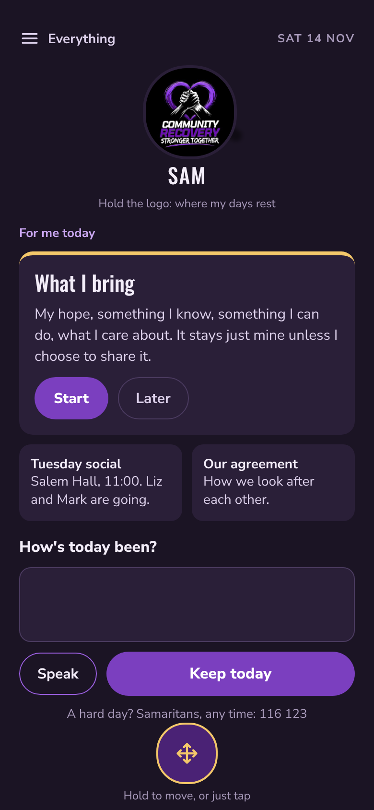
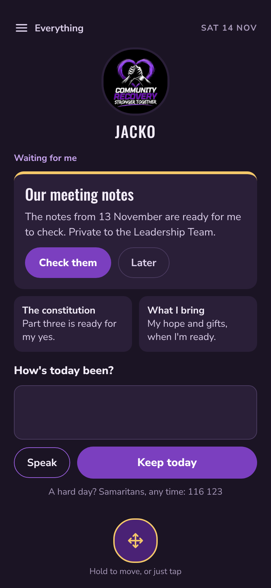
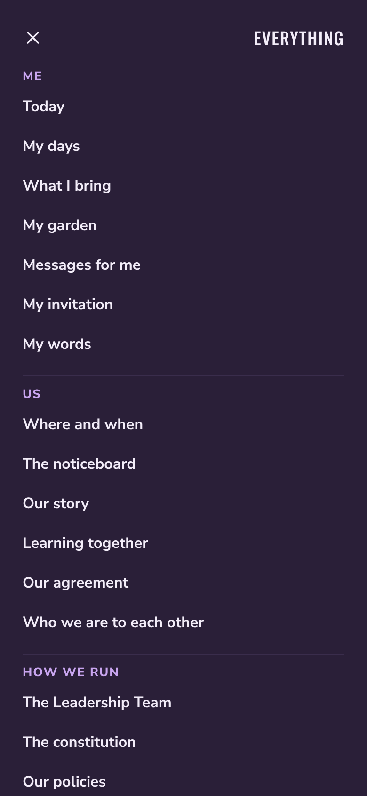
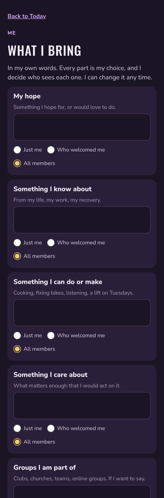
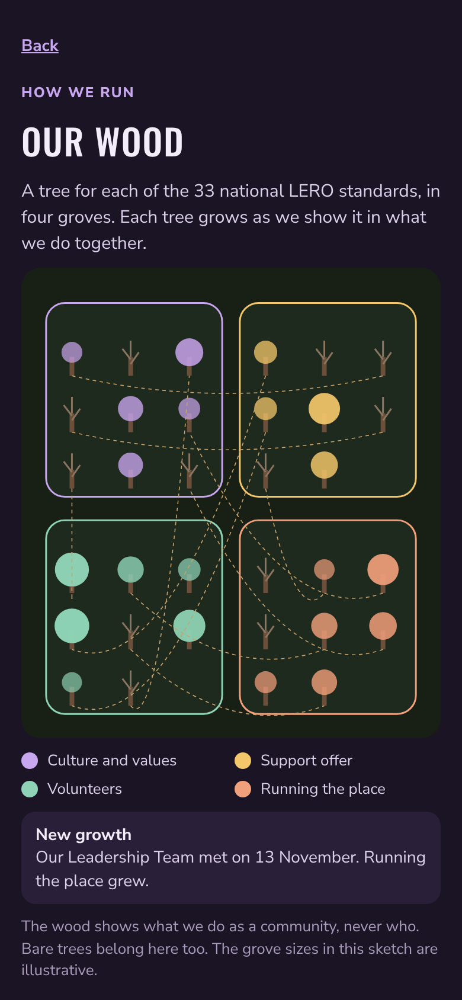
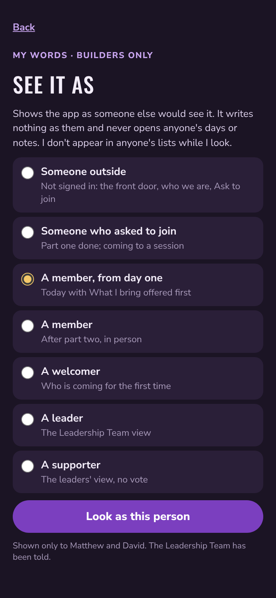

A proposal · Community Recovery first
The place: one landscape every LERO's app stands on, so people find their way.
The third phase of LEROs on the Commons, from Matthew Bushell: lay the place out once, so every screen of a LERO's app is a view of it. Five steps, each with a picture to play and a decision to answer, then the app’s screens and what was decided on 14 November. Everything below reads live from the beach.
Answer the decisionsTalk in the roomSee the screensPhase twoPhase oneThis proposal, plainly
The neighbourhood seen from the lighthouse, drawn from its draft on the beach: the common at the centre, four neighbourhoods where the standards' four sections stand, the gardens along the top, the gate below. The travelling lights are life moving through it, in gold because they carry no names; the gardens stay shaded, because a garden lights only for its owner.
- A LERO
- A lived experience recovery organisation: built by people in recovery, for people in recovery.
- Community Recovery
- A LERO in the making in Wellingborough, meeting at Salem Hall and the Allotments. Its app is the first to stand on this place.
- The beach
- The open ground where everything here is kept, a line at a time, each line in its place.
- The landscape
- One place, laid out once: every screen of the app is a view of it, from where a person stands.
- A neighbourhood
- One of four parts round the common, standing where the four sections of the national LERO standards stand.
- My garden
- Each member’s own place, private: their hope, their gifts, their days and the steps they’ve taken.
- Our wood
- The 33 standards as four groves, a tree for each, growing as the community shows them in what it does.
- The lighthouse
- The sign at the front, where a person sees where they are, what’s waiting for them and where life is happening.
- A decision card
- One question at the end of a step, answered with a word and a line of your own.
On 14 November Matthew went back through the original proposal (his Community Recovery page of 27 September, written for David to take to Sheffield), phase one and phase two, side by side with this phase, and answered every place where they differed, one question at a time, then weft's proposal. These are his answers, each with its reason. Phase one has been corrected to match, its old lines kept visible; weft is correcting phase two.
Step one · the place
1In short: lay the place out once, and let every screen be a view of it.
From a list of homes to a place
Tap a place to read it.
Every block on Community Recovery's beach has one home; the landscape gives each home a place you can stand in. The words under each place are the draft's own.
Step one, its own decision · how it’s kept
1.3In short: a map the app draws, now; a world on the beach when it’s ready.
Three ways to keep the landscape
Matthew’s answer, 14 November: a map the app draws.
Step two · the people in it
1.1In short: each person sees where they are, what's waiting for them, and where life is happening.
Finding the way, with one thumb
Hold the heart, then slide your thumb to a place. Or just tap it.
What it does for each person
The thumb in Community Recovery's own colours: Today under the thumb, Us above, Me to one side, How we run to the other, More below. A plain list, Everything, stays beside it for anyone who prefers it. The bar was tried and taken out.
From the lighthouse · the living within it
What the lighthouse shows
1.17In short: the life of the place, drawn so people can feel it, members only and never a name.
Five ways to see the life of the place
Drawn from a week like this one, to show the shape of it. In the app these read the live place, members only, in gold because they carry no names, and dark until enough people have taken part.
Step three · the gift map
1.11In short: the first thing the place shows is what members bring, and who could meet whom.
The gift map
Tap an open ring, a hope, to see which gifts could meet it.
Illustration: hopes and gifts invented to show the shape. Seen by members only, each shared on its owner’s yes; the crimson one went wider. What someone could use stays on paper.
Step four · every LERO
1.111In short: the same place for every LERO, each set where it really is.
From the country to the common
The white label
Step five · the build
1.1111In short: each piece useful alone, with a run-through of every screen alongside.
The run-through: the Leadership Team page
Before: one page of about two and a half minutes of scrolling. After: a hub of about three screens, each meeting and the notes behind their own doors.
The screens · decided 14 November
1.19In short: the app grows with what a person does, and nothing is counted.
Nine screens, drawn from the app as it stands









In Community Recovery’s own look. The people on the gift map are samples and the grove sizes are illustrative; the words are for the Leadership Team to choose.
No threads yet: each piece of work at the build becomes a thread once its decision stands.
The room
For talk that isn't a decision: questions, ideas, a reason to wait.
Nobody has spoken in the room yet.
The plain page, drawn from the blocks alone: happyseaurchin.com/proposal/leros-phase-three. Phase one is LEROs on the Commons; phase two is privacy first. The page on David’s site, drawn by weft: happyseaurchin.com/leros-phase-three.